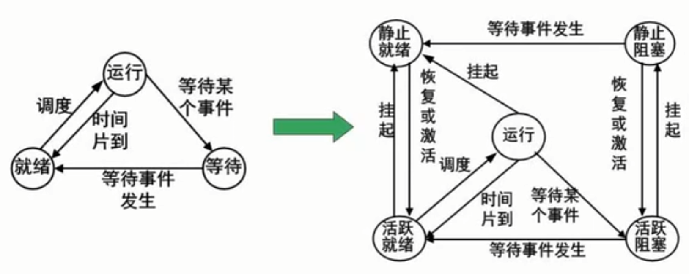
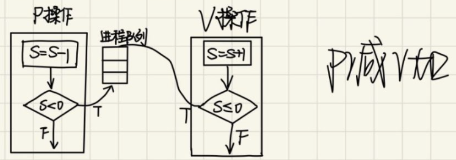
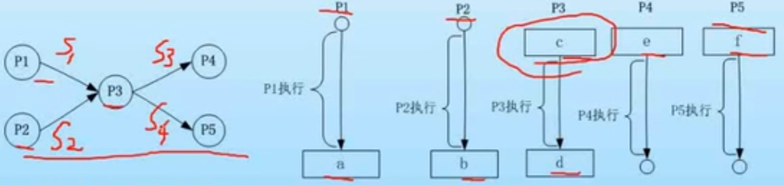

Exam | Day6 进程管理
进程简介
进程是程序在一个数据集合上运行的过程，它是系统进行资源分配和调度的一个独立单位。它由程序块、进程控制块(PCB)和数据块三部分组成。
进程与程序的区别
- 进程是程序的一次执行过程，没有程序就没有进程。
- 程序是完成某个特定功能的一系列程序语句的集合，只要不被破坏，它就永远存在。程序是一个静态的概念，而进程是一个动态的概念，它由创建而产生，完成任务后因撤销而消亡
- 进程是系统进行资源分配和调度的独立单位，而程序不是。
进程状态转换

-
三态图
-
等待态：指进程不具备运行条件，正在等待某个事件的完成，如运行程序在等待用户输入时，即进入阻塞态。一旦完成，就进入就绪态。
-
就绪态：进程已经获得除CPU以外所有的运行资源，只要等到系统调度获得CPU，便可立即执行，到达运行态。
在一个系统中处于就绪状态的进程可能有多个，通常将它们排成一个队列，称为就绪队列。
-
运行态：进程正在执行。当时间片结束后，运行态转换为就绪态
-
-
五态图
五态图是在三态图的基础上，引入了挂起机制。事件转换如上图所示。
进程的同步与互斥
进程并发可以提高执行效率。存在两种并发关系
- 互斥：进程间相互排斥的使用临界资源的现象
- 同步：进程之间是相互依赖的关系。前一个进程的输出作为后一个进程的输入，当第一个进程没有输出时第二个进程必须等待
临界资源：进程之间需要互斥访问的共享资源，例如打印机
临界区：进程中访问临界资源的那段代码称为临界区
PV操作
可以通过 PV 操作实现进程对临界资源的互斥访问
- 首先，引入信号量S，表示临界资源的数量
- 进程访问临界资源前，先进行 P 操作【S 减1，如果此时 ，说明临界资源被占用 ，进程放入阻塞队列；否则继续向下执行】
- 当进程完成临界资源的操作后，进行 V 操作【S 加1，如果此时 ，说明此时有进程在申请访问临界资源，但处于阻塞队列，需要将其中队列中取出，并唤醒执行；否则继续向下执行】

单缓冲区情况下的生产者与消费者问题的 PV 操作描述：
1 | # 信号量S1=1,S2=0 |
例题：对共享资源的读写操作，任一时刻”写者“最多只允许一个，而“读者”则允许多个。即： “读－写”互斥，“写－写”互斥，“读－读”允许。
信号量分析
- 读者-写者，写者-写者，互斥访问资源，需要信号量
rw；- 有多个读者可以访问资源，引入变量
count记录访问文件的读者数量；- 读者之间需要互斥访问变量
count，引入信号量mutex；PV操作
2
3
4
5
6
7
8
9
10
11
12
13
14
15
16
17
18
19
20
int count = 0;
semaphore mutex = 1;
# 读者
p(mutex); // 互斥使用count变量
if(count == 0) // 说明这是第一个读者，则负责上锁
p(rw);
count++;
v(mutex);
读文件；
p(mutex);
count--;
if(count == 0)
v(rw); # 最后一个读者离开，释放对文件的占用
v(mutex);
# 写者
p(rw);
写文件；
v(rw);
可以使用PV操作对前驱图进行描述。
做法是在在每条箭线上标出信号量，起点表示该信号量的 V 操作，终点表示该信号量的 P 操作。即可快速的完成 PV 操作。
例题：进程 P1，P2，P3，P4，P5 的前驱图如下所示。利用 PV 操作控制进程并发执行，则需要设置4个信号量 S1，S2，S3 和 S4，且它们的初值都为0。则图中 a 和 b 应分别填写 ，c 和 d 应分别填写 ，e 和 f 应分别填写 。

死锁问题
当一个进程在等待不可能分配到的资源就会发生死锁。产生死锁的4个必要条件为：
- 互斥：资源只能以独占方式使用
- 保持和等待：一个进程因请求资源而阻塞时，对已获得的资源保持不放
- 不剥夺：进程已获得的资源，在末使用完之前，不能强行剥夺
- 环路等待：若干进程之间形成一种头尾相接的循环等待资源关系
要预防死锁的发生，只需要破坏上述4个必要条件即可【例如允许抢占资源等】。
而死锁的避免有两种方法：
- 有序分配资源： 在一个进程完成之前不给其它进程分配资源，但这样降低了系统的并发性
- 银行家算法：当一个进程申请使用资源的时候，银行家算法通过先试探分配给该进程资源，然后通过安全性算法判断分配后的系统是否处于安全状态，若不安全则试探分配作废，让该进程继续等待。【多做两题就会了】